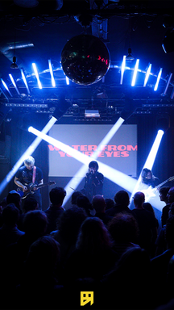
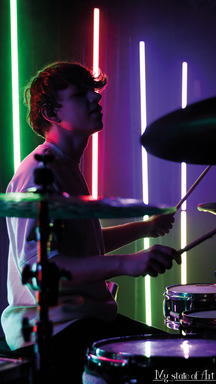
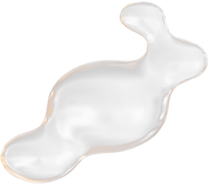
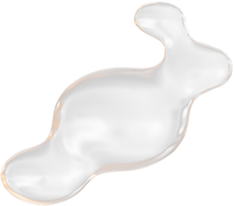

 

we’ve got nothing to lose
lets connect
Je relatie met de lichttechnicus is zeer belangrijk.
Wanneer je het lichtplan van tevoren bespreekt zullen je fotos 10x beter zijn.
Qua positie en en angle is alles mooier wanneer het van voor en achteren belicht is.
Over licht gesproken is zonlicht een andere
hele goede vriend van mij.
Golden hour is de beste tijd om te shooten.
en je klant zal er stralend en glowy uitzien.
Je relatie met de lichttechnicus is zeer belangrijk.
Wanneer je het lichtplan van tevoren bespreekt zullen je fotos 10x beter zijn.
Qua positie en en angle is alles mooier wanneer het van voor en achteren belicht is.